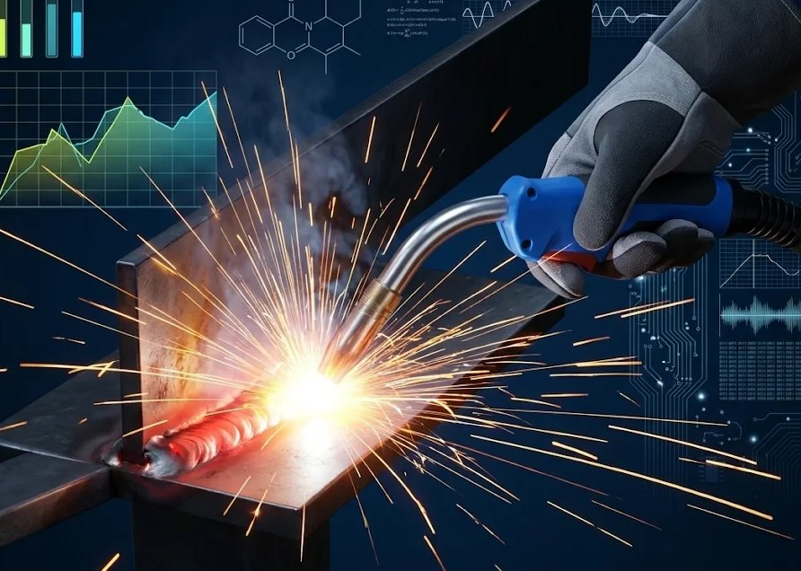
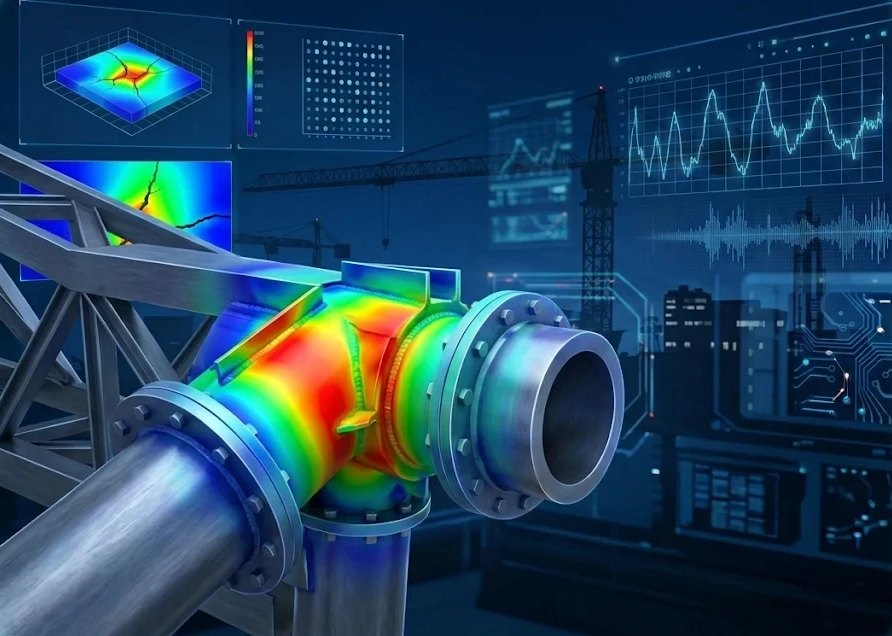
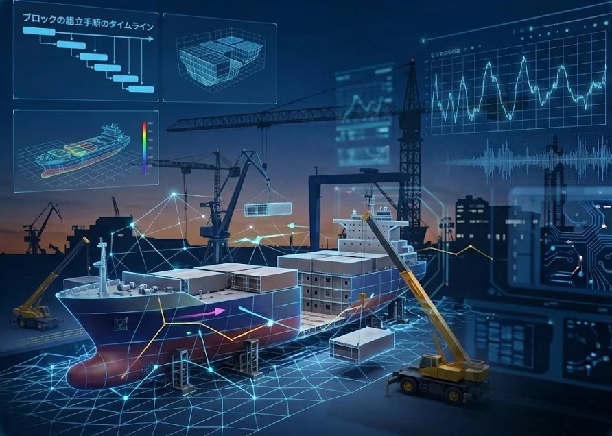
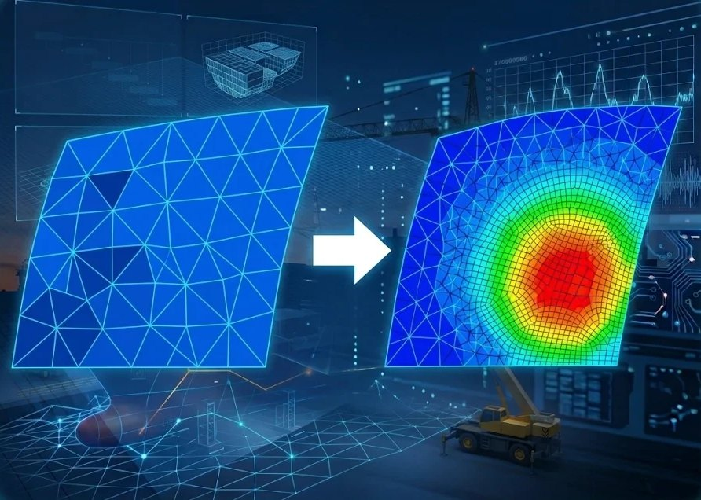
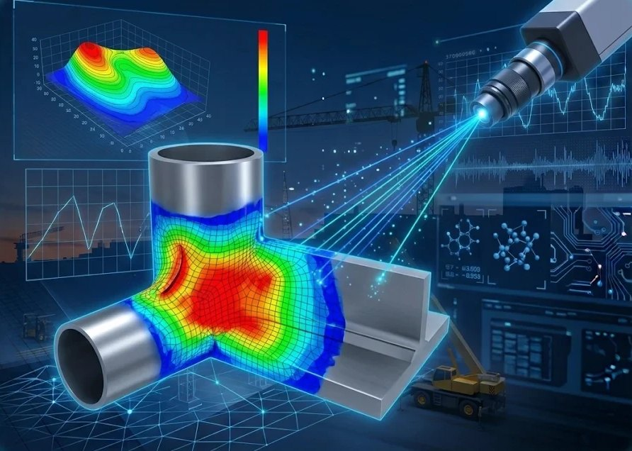

研究テーマRESEARCH THEMES

溶接・接合工学Welding and Joining 数値溶接力学Computational Welding Mechanics
数値溶接力学Computational Welding Mechanics 理想化陽解法FEMIdealized Explicit FEM
理想化陽解法FEMIdealized Explicit FEM- AI・機械学習Artificial Intelligence / Machine Learning
 デジタルツインDigital Twin
デジタルツインDigital Twin 溶接ロボット・自動化Welding Robot and Automation
溶接ロボット・自動化Welding Robot and Automation 線状加熱・ひずみ取り技術Line Heating & Distortion Correction
線状加熱・ひずみ取り技術Line Heating & Distortion Correction 金属AM（WAAM/DED）Metal Additive Manufacturing
金属AM（WAAM/DED）Metal Additive Manufacturing ショットピーニング解析Shot Peening Simulation
ショットピーニング解析Shot Peening Simulation 高温割れ・健全性評価Hot Cracking and Integrity Assessment
高温割れ・健全性評価Hot Cracking and Integrity Assessment
接合構造の信頼性Structural Integrity of Joined Structures
船体ブロックの順序最適化Block Assembly Optimization for Shipbuilding Eulerian法（FSW・切削）Eulerian Method (FSW / Machining)
Eulerian法（FSW・切削）Eulerian Method (FSW / Machining)
適応局所リメッシュAdaptive Local Remeshing
残留応力・計測評価Residual Stress and Measurement 造船DX・スマート造船Smart Shipbuilding (DX)
造船DX・スマート造船Smart Shipbuilding (DX)- 月面都市開発Lunar City Development
- 材料データベース・DPASMaterials Database / DPAS
 人材育成・教育Education and Human Resource Development
人材育成・教育Education and Human Resource Development- 産学連携・国際連携Industry-Academia and International Collaboration
※画像は生成AIで作成したイメージです。